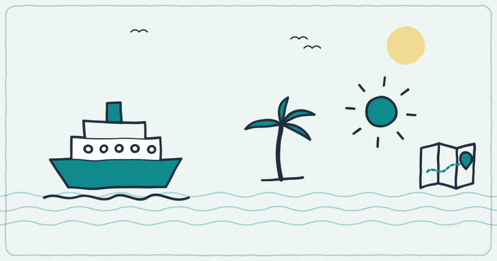

Vancouver to Hawaii Cruise: Sea Days, Seasons and Cost

Hawaii cruises from Vancouver run in spring and fall, when Alaska ships reposition across the Pacific. A one-way voyage is about 9 to 12 nights with four or five sea days, a round trip 14 to 18 nights with a crossing each way. They suit people who like sea days and want to skip at least one long flight.
A Vancouver to Hawaii cruise is really a repositioning voyage: twice a year the ships that spend summer in Alaska cross the Pacific to or from the islands, and Vancouver is where they leave from or arrive. You get a proper ocean crossing, warm island days at the far end and, on a round trip, no airport at all. It is one of the best-value long voyages from the west coast, provided you like sea days.
When do Hawaii cruises leave from Vancouver?
There are two windows, and they are short.
In late September and October, ships leave Vancouver after their last Alaska sailing and head for Honolulu, sometimes continuing to Sydney or Los Angeles afterwards. In April and early May the same ships come back, sailing Honolulu to Vancouver to start the Alaska season. Round trips from Vancouver that return to Canada Place appear in some years and not others, usually in the fall.
Lines that summer in Alaska run these, with Princess and Holland America the most regular in recent years and Celebrity and Royal Caribbean appearing some seasons. Because there might be only four or five departures a year across all lines, they behave like limited editions: balconies on the best-known ships can be gone a year out.
One-way or round trip?
| One-way (Vancouver to Honolulu, or reverse) | Round trip from Vancouver | |
|---|---|---|
| Length | About 9 to 12 nights | About 14 to 18 nights |
| Sea days | 4 or 5 in a row | 8 to 10, split into two crossings |
| Island days | 4 or 5 | 4 or 5 |
| Flights | One long one, Honolulu to or from your home city | None if you live within reach of Vancouver |
| Suits | People with two weeks who want some islands and one crossing | Sea-day lovers with three weeks, and anyone who hates flying |
| Watch for | Booking the one-way flight early; prices climb | Time off work and the second crossing's weather |
A one-way fall voyage is the most common. You sail out of Vancouver in October, land in Honolulu about eleven days later, and fly home from there. Air Canada and WestJet fly nonstop Honolulu to Vancouver, with seasonal nonstops to Calgary, Edmonton and Toronto, and Alaska, Hawaiian and United cover US cities.
What five sea days across the Pacific are really like
The crossing is the point of the trip, not the price of it. Most ships lean into it with lecture series, dance and craft classes, cooking demonstrations, trivia, choir and a full spa day or two. If you have never done more than two sea days in a row, this is where you find out whether you are a sea-day person.
Weather and clothing
Leaving Vancouver in October, the first day or two are cool and often grey. The air warms a little every day, and by day four people are in shorts. Pack layers for both ends and remember the ship's indoor spaces are air-conditioned throughout.
Motion
The North Pacific is open ocean, and late-fall crossings can be lively. If you are prone to seasickness, book a midship cabin on a low deck, where a noisy cabin is less likely too, and bring whatever remedy works for you. Children feel open water too; our note on kids and seasickness on a cruise covers remedies by age. Spring crossings are generally calmer than October ones.
Clocks
Hawaii is three hours behind Vancouver in spring and fall, so the ship moves ship's time back an hour on three of the sea nights heading west. Going east in spring you lose those hours again, one at a time.
Which islands you'll see
Port order varies by sailing, but a typical one-way fall voyage looks like this:
- Depart Vancouver late afternoon on day 1
- Days 2 to 6 at sea
- Hilo on the Big Island, the rainy, green side with Volcanoes National Park within reach
- Kona on the Big Island, usually a tender port, for coffee country and snorkelling
- Kahului on Maui, for the road to Hana or Haleakala
- Nawiliwili on Kauai, the quietest island on the route
- Honolulu on Oahu, often with an overnight before disembarkation
Round trips drop one island or shorten the overnight to fit the return crossing. Four island days is a taste rather than a tour; if the islands are the main draw for you, fly to Honolulu and take an island-hopping cruise instead, and treat the crossing as a separate holiday for another year.
What it costs compared with flying
Repositioning voyages are priced to fill, so the per-night fare is often lower than the same ship's summer Alaska rate, and balconies on a warm-weather route can be good value.
Count the extras the same way as any long cruise: gratuities for 14 to 18 nights add up, a drinks package pays off on sea days and rarely on port days, Wi-Fi across the Pacific is slow and worth buying only for the length you need, and the onboard duty-free shop is only a bargain if you know your allowance before you buy. The cruise vs flights-and-hotel comparison shows how to run the full sum.
Documents for Canadians and Americans
Hawaii is the United States, so the usual US entry rules apply at sea.
Canadians need a valid passport, exactly as on an Alaska sailing from the same terminal, and Canadian citizens do not need an ESTA for arrival by cruise ship; the details are in ESTA and documents for Canadians sailing from US ports. US formalities are handled either at the Vancouver terminal before boarding or on arrival in Hawaii, depending on the sailing.
Americans need a passport to enter Canada for the departure and to re-enter the US by sea. A passport card is accepted for land and sea travel between Canada and the US, but a full passport book is the safe choice if a medical flight home ever became necessary. Anyone staying on a ship that continues to Australia or the South Pacific should check the passport is valid for six months beyond the trip.
Because Vancouver is a foreign port, US cabotage rules are satisfied without the Ensenada stop that round trips from Los Angeles usually make. That is why these itineraries have more island time than their California equivalents.
Insurance for a two- or three-week ocean crossing
Five days from the nearest hospital is the strongest case for proper travel medical cover on any cruise. Check the policy's trip-length limit against the full trip including the flight, and if you are over 60, the stability clause for any condition. The Canadian specifics are in cruise travel insurance for Canadians.
Want this checked for your own sailing? A licensed cruise consultant can price it up and answer questions for free, with no obligation.
Ask a cruise expert →Is it the right cruise for you?
If three days at sea in a row sounds like heaven, a Vancouver to Hawaii crossing is one of the best things you can do from the west coast without an airport. If it sounds like a long time to look at water, fly to Honolulu and cruise the islands instead. Both are good holidays; they are just not the same one.
Questions people also ask
How long is a cruise from Vancouver to Hawaii?
One-way voyages run roughly 9 to 12 nights: four or five days at sea, then four or five island days ending in Honolulu. Round trips that return to Vancouver run about 14 to 18 nights, because the ship crosses the Pacific twice.
What month do cruises go from Vancouver to Hawaii?
Mainly September and October, as ships finish the Alaska season and head south, with the reverse voyages from Honolulu to Vancouver in April and May. Only a handful run each year, so the cabins people want go early.
Can Americans join a Hawaii cruise in Vancouver?
Yes. Vancouver is a foreign port under US cabotage rules, so a foreign-flagged ship can sail Vancouver to Honolulu with no detour to Mexico, and Americans just need a passport to enter Canada and come home. Many fly into Vancouver the day before.